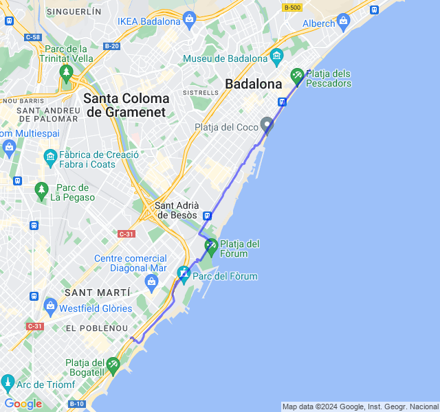
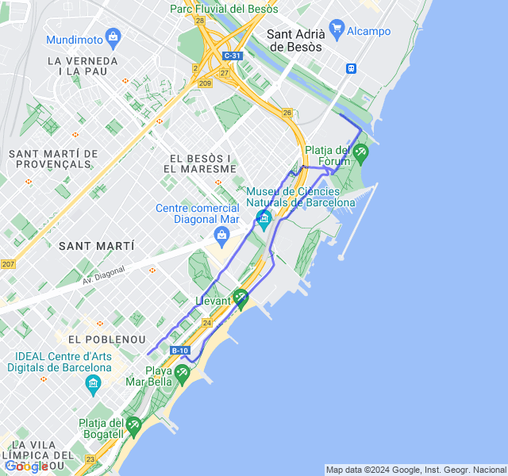
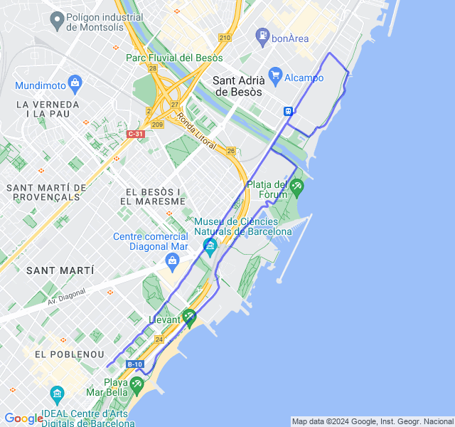
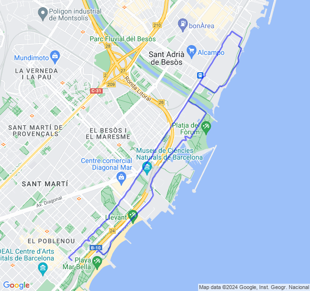
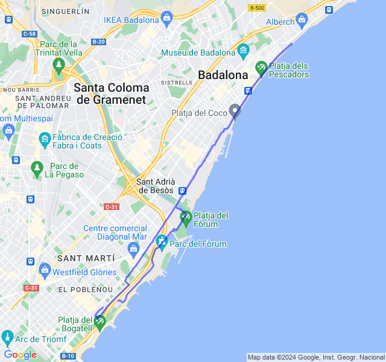

Settimana 12
Prima uscita con le scarpe da gara!
Prima uscita
14km Z1 + andature + allunghi. Qualche battito di troppo ma le sensazioni sono state buone.

Seconda uscita
3x500 + 5x400 + 5x200 Z5 Allenamento bello impegnativo. La parte peggiore son stati i 400 poi i 200 tutto in discesa (metaforica) 😆!

Terza uscita
8/10km corsa lenta. Tutto ok, corsa tranquilla.

Quarta uscita
10km Z2. Tutto tranquillo. Un po' più lento di quello che mi aspettavo.

Quinta uscita
Progressivo 4km Z1 + 9km Z3 + 3km Z4. VDOT Z3 4:10, Z4 3:56 ma mi sembrano fuori portata, soprattutto la Z3 quindi son partito con l'idea di stare sui 4:20/4:25.
Prima uscita con le scarpe da gara (Vaporfly 3) che mi sembrano molto comode. Secondo me sono un po' pesante per giovare di tutti i vantaggi di questo tipo di scarpe ma vedremo in gara.
Ho controllato sia FC che passo e mi pare si essere stato bene nelle zone corrette. Ho forse faticato un pochino troppo nell'ultima parte in Z4.
p.s.: ho anche preso 2 semafori nell'ultima parte che mi hanno un po' tagliato il ritmo.
